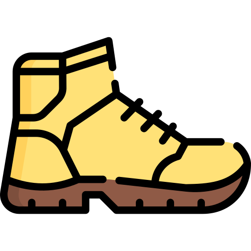

<div class="counter">
    {{ currentDistanceValue.toFixed(1) }}
</div>
<div style="justify-content: center; text-align: center;">
    <h1>pređenih kilometara </h1>
</div>
<div class="counter">
    {{ currentRoutesDoneValue.toFixed(0) }}
</div>
<div style="justify-content: center; text-align: center;">
    <h1>završenih akcija </h1>
</div>


<div style="justify-content: center; text-align: center;">
    <h1 style="margin-top: 80px; margin-bottom: 10px;">Osvojeni vrhovi</h1>
    <div *ngFor="let route of userDoneRoutes">
        <div *ngFor="let peak of route.peaks" class="peaks">
            <span style="text-align: right;">{{peak.name}}</span><span> - </span><span
                style="text-align: left;">{{peak.elevation}} mnv</span>
        </div>
    </div>
</div>